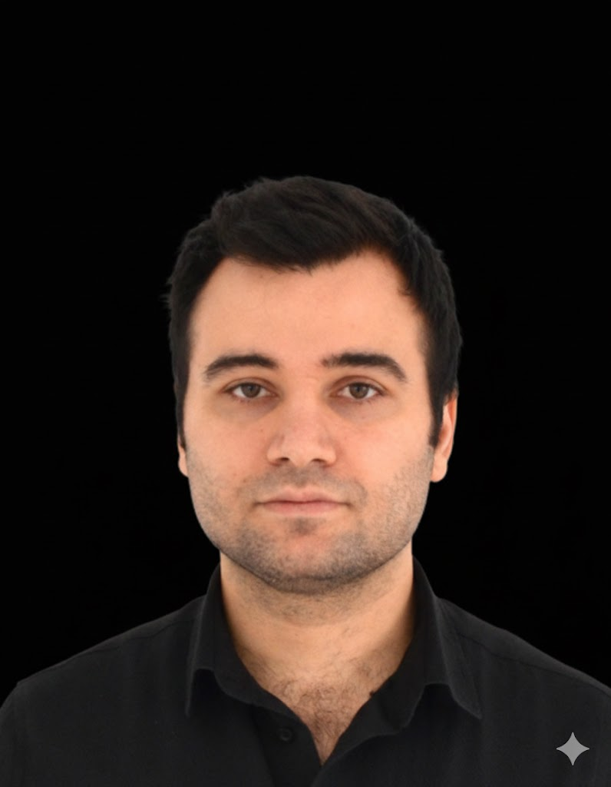

Kıdemli Yazılım Mimarı | Dağıtık Sistemler | Yapay Zeka Destekli Geliştirme
| Adres | Beyoğlu/İstanbul |
| Telefon | +90 552 942 2722 |
| E-posta | mustafaergan@gmail.com |
| linkedin.com/in/mustafaergan | |
| Github | github.com/mustafaergan |
| Doğum Tarihi | 22.02.1987 |
Sigorta, finans ve enerji sektörlerinde yüksek ölçekli kurumsal sistemler tasarlama konusunda 12 yılı aşkın deneyime sahip Kıdemli Yazılım Mimarı. Java ekosistemi, mikro hizmetler, dağıtık sistemler ve Kafka ile Redis kullanarak olay tabanlı mimariler (event-driven architectures) üzerine uzmanlaşmıştır. Yüksek performanslı platformlar ve kurumsal entegrasyon çözümleri oluşturma konusunda tecrübelidir. Son dönemde yapay zeka destekli geliştirme ve akıllı otomasyon çözümlerine odaklanmaktadır.
Ufuk Üniversitesi
Gazi Üniversitesi
Mustafa Kemal Üniversitesi
Süleyman Demirel Üniversitesi
Java, JavaScript (ES6+), Python
Spring Boot, Spring Security, JPA, Hibernate, React, Angular, JSF, Primefaces, Bootstrap, JQuery
Mikro Hizmetler, Dağıtık Sistemler, Olay Tabanlı Mimari, Kurumsal Mimari
Docker, Kafka, Redis, CI/CD, Jenkins, Git, SVN, TFS, Maven, Weblogic, Tomcat, WildFly
Oracle, PostgreSQL, PostGIS, MySQL
Açık kaynaklı yardımcı programlara ve geliştirici araçlarına aktif katkıda bulunan. Projelerimi GitHub üzerinden inceleyebilirsiniz.
Java Performansı, Mikro Hizmet Mimari ve Olay Tabanlı Sistemler hakkındaki görüşlerimi paylaşıyorum. Teknik yolculuğumu Medium üzerinden takip edebilirsiniz.
Anadolu Sigorta: Büyük hacimli poliçe operasyonlarına hizmet veren kurumsal sağlık sigortası provizyon platformu.
Anadolu Sigorta: Poliçe üretimi ve finansal tahsilatların karmaşık yaşam döngüsünü yöneten temel sigortacılık platformu.
Çevik Çözüm: Geliştirici verimliliğine ve büyük ölçekli veri sorun gidermeye odaklanmış yüksek performanslı veritabanı analiz aracı.
Turkish Technology: Sigorta acentelerinin portföy, raporlama ve müşteri operasyonlarını yönetmeleri için merkezi platform.
Biznet: Enerji/hizmet sektöründe müşteri ilişkilerini ve satış süreçlerini izlemek için özel CRM çözümü.
Enerjisa: Dağıtık enerji varlıklarını harita üzerinde yönetmek ve görselleştirmek için CBS entegreli altyapı.
Başarsoft: AFAD için oluşturulan, karmaşık mekansal verileri ve koordinasyon araçlarını entegre eden kritik afet yönetim sistemi (AYDES).
Mustafa Kemal Üniversitesi: Uluslararası öğrenci kabulleri, belgeler ve akademik takip yönetimi için entegre sistem.